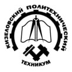

|  | Группа МОЦ22/9 |
| Информация | Список студентов | Перспективы |
В наш век повсеместной компьютеризации профессия «Мастер по обработке информации»
становится все более популярной.
Уже невозможно представить себе работу банка, офиса,
большого или малого предприятия без использования вычислительной техники.
На фоне этого умение работать с компьютером становится не просто интересной,
но и еще весьма и весьма необходимой профессией.
Мастер по обработке цифровой информации – квалифицированный специалист в области
информационных технологий,
владеющий навыками обработки
текстово-числовой информации, умеющий работать с пакетами прикладных программ,
владеющий основами построения автоматизированных информационных систем.